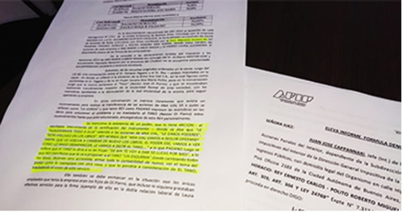

Real Chubut - Agencia de Noticias


Arcioni y Di Pierro denunciados por la Afip en una causa por estafa al Estado y lavado de dinero

La Administración Federal de Ingresos Públicos (AFIP) elevó un informe a la Justicia Federal y formuló una denuncia en la que expone un entramado de corrupción vinculado a la Municipalidad de Comodoro Rivadavia, en la que ubica al ex intendente Néstor Di Pierro como el jefe de una asociación ilícita.
El informe apunta a los exfuncionarios como Abel Boyero y Carlos Rey, y cita a los empresarios Héctor Horacio Pagano, Paolo Roque Pagano, Roberto Miguel Polito, Esteban Torraca y Roberto Monasterolo como "eslabones para perpetrar los ilícitos".
Lo llamativo es que en la página 16 del extenso informe firmado por Juan José Cappanari, jefe de la División de Coordinación de Acciones Penales del Interior de la AFIP, se cita expresamente la intervención que habría tenido el "escribano Mariano Arcioni" certificando un contrato de ventas de acciones presuntamente fraudulento, en un documento "que carece de las firmas de las compradoras".
Asimismo detalla que en las escuchas telefónicas que se adjuntan a la causa, los imputados Horacio Pagano y Ernesto Rey surge que se encontraban realizando transferencias de titularidad de una de las empresas, "con las maniobras tendientes a la disimulación de la real titularidad".
La extensa denuncia describe hechos acaecidos entre 2010 y 2017 y recayó en el juzgado que tiene a su cargo la jueza Eva Parcio. Además de enrostrarles la presunta comisión del delito de "asociación ilícita", menciona la denuncia que en función de "los elementos recolectados a través de diversos allanamientos, informes bancarios y entrecruzamientos de datos internos, existen claros elementos que configuran los delitos de lavado de activos de origen delictivo; evasión impositiva; defraudación a la Administración Pública; falsedad documental; y evasión tributaria".
Hechos por 463 millones de pesos
En varios tramos se hace referencia a la figura del ex intendente de Comodoro Rivadavia en el periodo 2011-2015, como líder de la banda, al señalarse que en base a la tarea de investigación y fiscalización realizadas por el organismo se estaría frente a "un grupo organizado de personas, con una conducción claramente centralizada en la persona de Néstor Di Pierro".
Posteriormente, se empieza a desgranar un esquema y operatoria de empresas y vínculos familiares para la presunta comisión de esos delitos de corrupción con un perjuicio dimensionado para el erario público de 463 millones de pesos, que terminaron en empresas o compra de propiedades.
Cappanari describe que las maniobras se llevaron "al amparo de la utilización de entramado de sociedades, operatoria entre empresas pertenecientes en lo formal a grupos de personas diferentes, las que se sucedieron e intercambiaron en figurar como prestadoras de bienes y servicios para la Municipalidad de Comodoro Rivadavia, y llevar a cabo en forma sistemática una serie de maniobras sostenidas en el tiempo, que les permitió el manejo y dirección de los fondos municipales, muchos de ellos destinados a paliar los déficits y desastres climáticos ocurridos durante los últimos años en la ciudad", sintetiza.
Incrementos patrimoniales
Para la AFIP, Di Pierro utilizó a familiares: hijos, ex esposa y hasta la actual pareja para blanquear el dinero presuntamente mal habido. El denunciante asegura que el ex intendente "es el real titular de una de las firmas investigadas: Ana Vial S.A. y buscó disimular los incrementos patrimoniales y disposición de fondos, a partir de empleos falsos a sus hijos en Ana Vial SA, plazos fijos y la adquisición de vehículos que eran locados a empresas que también forman parte de la organización criminal que se investiga", detalla.
Por otro lado, se indica que "en la documentación secuestrada del año 2015 al domicilio de calle Altolagurirre N° 2711 de la ciudad Autónoma de Buenos Aires, vinculado con la empresa Resoma S.A. y el Sr. Alejandro Gustavo Caviligia, se ha localizado un Contrato de Venta de acciones de fecha 5/07 /2013, con firma certificada por el Escribano Mariano Arcioni de los firmantes Pagano Horacio Y Pouto Sandra Ana Maria, donde estos venden las acciones de esta empresa a Ana Maria Llanos Massa Y Di Pierro Laura Alejandra. El documento carece de las firmas de las compradoras", menciona la denuncia elevada por la AFIP.
Escuchas telefónicas
Para fundamentar la denuncia, la AFIP precisa que "de las escuchas originales ordenadas en la causa, surge del CD 40, una conversación entre el Sr. Horacio Pagano y el Sr. Rey ambos imputados en la causa en donde se refieren a la situación de la firma Ana Vial S.A., en la cual figuran como accionistas el Sr. Pagano y de su ex mujer Sandra Ana María Palito, pero en la conversación surge que la misma pertenece al "Tano" (Néstor José Di Pierro), y que se encontraban realizando transferencias respecto de la titularidad formal de esta sociedad, con las maniobras tendientes a la disimulación de la real titularidad de la misma, para seguir operando la empresa".
El rol de Arcioni
Aquí aparece uno de los datos reveladores: "En dicha conversación se expresa claramente que existía un inconveniente para realizar la transferencia de las acciones de Ana Vial SA a quién se refieren como "La Gorda" y que tanto Rey como Pagano expresan las maniobras en los libros para solucionar el problema y no trasladarle al Tano (Néstor Di Pierro) estos inconvenientes hasta que esté solucionado, encargándose de esto Rey personalmente.
Se menciona la existencia de un poder, que lo tiene Arcioni, el escribano interviniente en la certificación del instrumento, donde se dice que "le transferimos todo a ella" referido a las acciones de Ana Vial, "le dimos poderes", "está volcado en los libros", Rey afirma que "Ana Vial vamos a seguir operando hasta que yo vuelva a cambiar de nuevo los libros, el poder ese, vamos a ver como lo hago desaparecer, le vamos a decir al Tano" a lo que Pagano luego se refiere que el Tano le diría a su ex mujer "de ahí te voy a dar 50 lucas por mes", a lo que Rey manifiesta que le va a proponer al Tano "un esquema donde cambiando todos los libros, dejando otro accionista, armar toda la contabilidad de nuevo, ver el tema del poder como lo reemplaza con otra cosa, y que lo pondría a consideración de El Tano, trasladando el costo de este servicio", puntualiza otro tramo de la denuncia.
Derivación de "Apadrinados"
La investigación se enmarca en la causa número 7313, que investiga maniobras de presunto lavado de activos y acciones incompatibles con la función pública, por hechos ocurridos entre los años 2010 y 2017.
Como si fuera poco, todo se inicia como derivación de una causa por narcotráfico, conocida como "Apadrinados", lo que generó el inicio de actuaciones en 2015, cuando en enero de ese año se allanaron oficinas de la Municipalidad y el Concejo Deliberante.
Gravedad institucional
Parte de esta denuncia fue difundida la semana pasada por diferentes medios de la provincia de Chubut, apuntando a funcionarios y exfuncionarios comodorenses y a empresarios y familiares, pero sin trascender la presunta participación profesional del actual gobernador de la provincia, escribano Mariano Arcioni.
(Ver https://www.elchubut.com.ar/nota/2019-8-1-0-12-0-afip-denuncio-a-di-pierro-y-otros-comodorenses-porlavado-de-activos-asociacion-ilicita-evasion-y-defraudacion ; https://www.adnsur.com.ar/politica/un-dictamende-afip-acusa-a-di-pierro-y-boyero-de-integrar-una-asociacion-ilicita-por-su-desempeno-en-el-municipio-decomodoro)
El nuevo dato que reveló el dictamen que figura en la causa que cuenta con más de 40 carillas, es que el escribano Mariano Arcioni habría sido el profesional que permitió legitimar parte de estas "operatorias fraudulentas". Un dato que podría acarrear serias consecuencias legales a partir de la responsabilidad que le cabe a los profesionales ante este tipo de delitos, y que ya comenzó a generar revuelo público considerando el rol institucional que le compete a Arcioni.
El Ejecutivo provincial hasta ahora no ha emitido ninguna declaración formal al respecto pese a la gravedad de la denuncia de AFIP.
Fuente: Canal Nueve
PUBLICIDAD